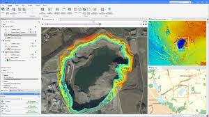
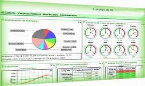
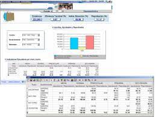

¿Qué son los sistemas de informacion?
Es un conjunto de elementos que interactúan entre sí con un fin común; que permite que la información esté disponible para satisfacer las necesidades en una organización, un sistema de información no siempre requiere contar con recuso computacional aunque la disposición del mismo facilita el manejo e interpretación de la información por los usuarios
Dan soporte a las operaciones empresariales, la gestión y la toma de decisiones, proporcionando a las personas la información que necesitan mediante el uso de las tecnologías de la información. Las empresas y, en general, cualquier organización, los utilizan como un elemento estratégico con el que innovar, competir y alcanzar sus objetivos en un entorno globalizado. Los sistemas de información integran personas, procesos, datos y tecnología, y van más allá de los umbrales de la organización, para colaborar de formas más eficientes con proveedores, distribuidores y clientes.
EVOLUCION DE LOS SITEMAS DE INFORMACION
1950 - 1960: procesamiento de datos electrónicos, sistema de procesamiento de transacciones: Sistema de procesamiento de transacciones (TPS) fue el primer sistema computarizado desarrollado para procesar datos comerciales. TPS estaba principalmente dirigido al personal administrativo de una organización. El TPS inicial utilizaba datos de procesamiento por lotes que se acumularon durante un período y todas las transacciones se procesaron posteriormente. TPS recopila, almacena, modifica y recupera las transacciones diarias de una organización. Por lo general, TPS informatiza o automatiza un proceso manual existente para permitir un procesamiento más rápido, un mejor servicio al cliente y costos administrativos reducidos. Ejemplos de productos de TPS son los depósitos en efectivo, el cajero automático (ATM), la orden de pago y los sistemas contables. TPS también se conoce como procesamiento de transacciones o procesamiento en tiempo real.
 1960 a 1970: Sistemas de información gerencial: procesa los datos en informes informativos útiles y proporciona a los gerentes las herramientas para organizar evaluar y administrar de manera eficiente los departamentos dentro de una organización. MSI entrega información en forma de pantallas e informes preespecificados para respaldar la toma de decisiones empresariales. Algunos ejemplos de resultados de MSI son los sistemas de informes de tendencias de costos, análisis de ventas y rendimiento de producción.
 1970 a 1980: Sistemas de soporte de decisiones: Este nuevo rol de los sistemas de información para proporcionar soporte ad-hoc interactivo para el proceso de toma de decisiones a los gerentes y otros profesionales de negocios se denomina Sistemas de Soporte de Decisiones (DSS). DSS sirve el nivel de planificación, gestión y operaciones de una organización, por lo general, la alta dirección.
 1980 a 1990: Sistemas de información ejecutivo: ofrece servicios de toma de decisiones a los ejecutivos a través del suministro de información interna y externa relevante para cumplir los objetivos estratégicos de la organización. A veces se consideran como una forma específica de DSS. Los ejemplos del ESI son sistemas para facilitar el acceso a las acciones de todos los competidores, desarrollos económicos para respaldar la planificación estratégica y el análisis del desempeño del negocio
1990 a 2000: Sistemas de gestión del conocimiento: es una forma específica de organización de un sistema de información estratégica que incorpora todos los componentes de una organización, incluidas la fabricación, las ventas, la gestión de recursos, la planificación de recursos humanos y el marketing. Apoya la creación, organización y diseminación del conocimiento empresarial Ayuda disponible para toda la empresa
2000 - presente: E-Business: es una mayor conectividad entre los componentes del sistema similares y diferentes. Existe una gran infraestructura de red, un mayor nivel de integración de funciones en todas las aplicaciones y potentes máquinas con mayor capacidad de almacenamiento. Muchas empresas usan tecnologías de Internet y procesos de negocio habilitados para la web para crear aplicaciones innovadoras de comercio electrónico.